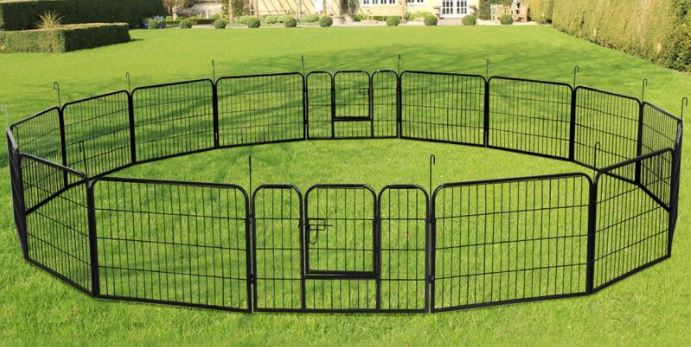

Top 10 Best Portable Dog Fences For Camping
If you are planning on going camping with your dog, you will need to bring one of the best dog fences to help you keep them safe. Camping will always be fun unless you lose your dog. To avoid this from ever happening, get your dog a portable dog fence. A fence will keep your dog off of a leash which will make them even more happy than how we know dogs get.
- Petsfit Pop Up Dog Playpen & Fencing
- Mesh windows reduce visibility
- Great ventilation
- Good size for small dogs
- Doesn’t come with stakes
- Includes storage pockets
- No stakes are provided
- Mesh windows reduces visibility
- Yaheetech Heavy Duty Foldable Metal Pet Exercise Fence Location: Diamond Fork Rd, Spanish Fork, UT
- Heavy duty dog fence
- Highly customizable by removing or adding panels.
- Includes Two gates
- Comes in two different heights for your large or small dogs
- Very portable since it is able to fold flat.
- Can be set up into two smaller pens
- Gate latches are of low quality
- North States MyPet 34 Sq. Ft. Petyard Fencing
- Made from sturdy materials
- Easy and fast assembly
- Easy to customize to the size you need
- Dogs can damage fence by chewing
- The Door is too small for some dogs
Midwest Homes Portable Camping Fence
- Includes 8 ground anchors.
- Very Cheap
- Size: Adjustable height up to 48 inches.
- Very Light
- This isn't heavy duty
LOOBANI Pet Playpen Mesh Fabric Top Cover
Paws and Pals Portable Camping Dog Fence
- Very Durable
- Adjustable from 24 to 48 inches
- 30 Square feel in size
- None that we can think of
High Tech Pet Products Bluefang Smartphone Controlled 5-in-1 Electronic Dog Fencing and Containment System
PetSafe Stubborn Dog Inground Fence
ShinShop 16 Panel Heavy Duty Cage Portable Dog Fences
- Heavy duty
- Very Spacious
- Multiple setup option
S AFSTAR 40/48” Portable Dog Fences
- Secure Door Access
- Able to transform into different shapes and sizes
- Foldable
- Suitable for outdoor and indoor use

As one of the very best budget dog fence for camping, the Petsfit Pet Playpen uses practical confinement throughout your outdoor adventures. There are two sizes that are offered that will conveniently accommodate smaller pets without any type of problem.
The product has the sturdiness that is required to guarantee your pet's security. The base is a zip-off type and has a 8-panel design which will help keep the playpen's shape.
Your dog can see what's happening all around him or her without having to worry about insects. The mesh material also gives your dog plenty of shade. This will keep your dog cool throughout the day. This playpen's bottom is connected to the remainder of the fence, supplying a tidy, comfy surface for your dog to rest or sit on. The flooring also safeguard against rough terrain or ants that might make things unpleasant.
The playpen can be folded completely flat whenever you need it to be flat, like moving it to a new location. A travelling bag makes carrying the pen easy and likewise assists you in storing the fence when you are home and not out on a trip.
Pros
The Yaheetech Heavy Duty Foldable Metal Pet Exercise Fence includes a sturdy construction that every owner wants in a kennel. Despite the tough construction, it is simple and easy to move as might be required during your journey or trip.
The 16-panel design is simple to set up. The pen can be set up to suit your dog's needs in a variety of different configurations, including rectangular, octagonal, and round settings. You will not have any difficulty changing the fence to fit your camping needs, particularly if your campsite has an uncommon shape.
The iron construction assists in securing the fence against any animal's destructive chewing habits, and the rounded edges assist in keeping everything more secure for dog's and make the fence anchor more easily. The design likewise makes it very easy for the fence to be folded flat.
Yaheetech Heavy Duty Foldable Metal Pet Exercise Fence fence is rust-resistant and includes long lasting door latches which make it simple for your dog to get in and exit the fenced-in location easily. It's also easy to store in the house or carry. It is also easy to store in a truck, or the garage.
Pros

The North States MyPet 34 Sq. Ft. Petyard Fencing is a great option for containing your pet. It will keep them safe while enjoying your alone time. Your canine can be enjoying the fresh air without going missing or having to be on a leash.
One of the functions that this portable dog fence offers for camping is a door that is lockable to assist in preventing your dog from escaping. efforts and roaming. If you want to make the play area smaller for your dog, you can do so by eliminating two of the panels.
The fence's style makes it very easy to move around if you plan on relocating the play area. The fence is also floor-safe, equipped with scratch-resistant pads to prevent scratching your floors if you plan on moving the fence inside. This is a great option for anyone who wants simplicity.
Pros
The Midwest Homes Portable Camping Fence features a safe double latch lock and practical easy access door. In addition, this outdoor camping fence is easily assembled, no tools are ever needed, and very light-weight compared to other fence. It is also able to fold flat and is made from 8 panels that are 24 inches in width each. One of the best aspects of this dog fence is that you can buy it in a variety of different sizes based upon the height or size of your dog. This ensures that your canine will not leap out of the fence.
Pros
The LOOBANI Pet Playpen Mesh Fabric Top Cover was designed to match the needs of all small dogs, along with young puppies. Locking, latch-door access assists in preventing your dog from going out while confined.
When you set up this dog pen, the enclosure offers 8 square feet of space for your dog. Your small dog needs to feel comfy in this enclosure and have the ability to see enough of what's going on to keep them pleased.
An advantage that these pens provide is the capability to link extra panels for a larger area for your pet to wander. These additional panels link quickly enough, ideal for settings where you bring more than one dog or yours' desires a bit more roaming room.

The Paws and Pals dog fence for outdoor camping is a terrific alternative for owners with big dogs because it is very strong and fits a total of 30 square feet. It's offered in 3 different sizes and is very tall to prevent your dog from leaping over the fence and getting away. The half-inch wire likewise prevents pups from leaving this camping fence.
This portable dog fence is easy to to bring along on a camping trip, set up, and fold up. This dog fence will give your canine a safe, enjoyable, and secure experience.
Pros
This flexible training collar is basically 5 collars in one that offers an effective training tool with amazing functions. This system comes with a base station transmitter, one BF-30 Super Collar with air conditioner adapter, 50 feet of strong copper limit wire, 50 flags, 3 burial grade wire entwined, instructions for setup and training, and a collar battery.
Comes with a cutting edge electronic fence innovation that features anti-run through avoidance, an illuminated system control board, pulsed proportional stimulus, visual and audible wire break alarms and 50 feet of solid-core ultra-wire.
Features 4 training mode: sound, vibration, 99 levels of static stimulus and a clicker. You can manage the water resistant collar from your mobile tablet or phone from up to 400 feet away. The app deals with iphones and androids and can be paired to several collars.

This invisible fence is specifically developed for persistent dogs who like to test the boundaries you set. It comes with a water resistant receiver collar, 4 adjustable levels of static correction, and has some of greatest intensity levels on the market.
This invisible fence features something called "Run Through Prevention". This feature increases the correction if your pet goes through the border.
If you choose to not use the static correction, you can use the vibration or tone alerts. The package features the power adapter and transmitter as well as the receiver collar. You will also receive a 9-volt battery, 50 boundary training flags, a training guide, a test light tool, and 500 feet of free wire.

The ShipShop Company has actually succeeded with this durable portable dog fence. It comes with 16 steel panels that are very sturdy, and each of them has dimensions of precisely 24 x 31 x 8 inches. This means you can fit the panels however you want in many different shapes to provide your pet as much space as is needed to play while you are on your camping journey. The rust-free panels are modular and allows you to create different types of playpens to house your canines, felines, or any other pets that you may have.
It also has a hinged door for extra safety. setting it up is very easy and can be completed in just a few steps. You can install the panels as a rectangle-shape, octagon shape, or square shape as you prefer.
Pros
Larger dog breed dogs gives two times the enjoyment and love, but they can also be a hard to handle. This is why you will need a dog fence to help your dog get the workout they need without having to be fully supervised. The S AFSTAR 40/48 inch Dog Fence is particularly developed for larger type pets as you'll see with its dimensions and features.
It features 8 panels that have measurements of 40 ″ x 31 ″ each and also have 8 round stakes that are used to keep said panels in place no matter the number of times your dog bumps into them.
This portable dog fence is designed for larger type dogs and is very resilient and strong. It'll not only hold up against bad weather but can likewise take the constant pressing or bumping from you or anyone around. It is made from solid iron and will be perfect for your dog.
ProsFeatures to consider when buying a portable dog fence
Types of doorsDepending on whether or not you have a dog that is small enough for you to raise over the fence, you will need to consider the type of door that the fence has. Maybe it will be a bit too small for you to enter together with your dog. You will need to consider teaching your dog to use the door before before going on your camping trip. You do not want to have to be lifting a large dog over the fence to get them out. Or having to break down the fence with them still inside.
Type of material usedThe type of material you choose for your fence will play a big role in whether or not you will be a happy camper. You wouldn't want to have a weak material used to build your fence if you have a dog such as a German Shepard or Rottweiler. If you have a dog like a Poodle or a Miniature Pincher then the material does not have to be of the strongest type.
Size of the fenceJust like how the material used to build your fence is important, the size of the fence is also important. A small fence will not make a large dog happy.
Benefits of Using a Portable Dog Fence For Camping
Taking your dog outdoors can be a much better option than leaving them with a dog sitter or being left home alone or in a kennel while you are not home. Owning a dog fence will make your trip with your dog more enjoyable, successful, or safe. You can bring all their toys, their bowl, and their food containers and keep them all safe and accessible while still providing room to move about in the camping site.
Whether or not you are going to be staying in an rv or tent, a fence will be more enjoyable for your dog. A fence will allow your dog to move around while outdoors without having to worry about them getting lost
While you are out in the wild, there might be wildlife in the area. These wildlife might be aggressive towards pets. A fence will block your dog from interacting with wildlife.
Conclusion
A dog fence is a great way to keep your dog happy while you enjoy your camping trip. Choosing the right one is always a good start and will avoid the possibility of regretting your purchase. Some dog fences are made for small dogs while small are made specifically for medium to large dogs.